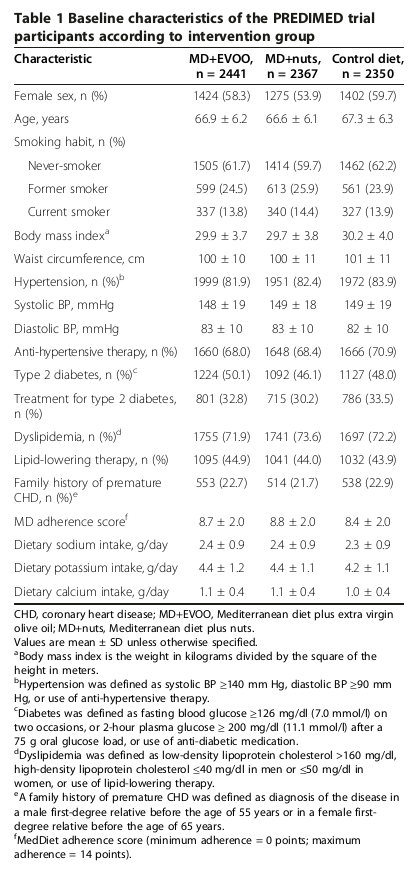

<?xml version="1.0" encoding="UTF-8"?>
<table title="table1" id="table1" class="tabcontent" xmlns="http://www.w3.org/1999/xhtml">
 <tr>
  <td>
   
   <p>../../cm-ucl/corpus-oa-pmr-v02/10.1186_1741-7015-11-207/tables/table1/table.png</p>
  </td>
  <td>
   <table class="table">
    <caption/>
    <tr>
     <th class="cell">Characteristic </th>
     <th class="cell">MD+EVOO, n = 2441 </th>
     <th class="cell">MD+nuts, n = 2367 </th>
     <th class="cell">Control diet, n = 2350 </th>
    </tr>
    <tr>
     <td class="cell">Female sex, n (%)</td>
     <td class="cell">1424 (58.3)</td>
     <td class="cell">1275 (53.9)</td>
     <td class="cell">1402 (59.7)</td>
    </tr>
    <tr>
     <td class="cell">Age, years</td>
     <td class="cell">66.9 ± 6.2</td>
     <td class="cell">66.6 ± 6.1</td>
     <td class="cell">67.3 ± 6.3</td>
    </tr>
    <tr>
     <td class="cell">Smoking habit, n (%)</td>
     <td class="empty"/>
     <td class="empty"/>
     <td class="empty"/>
    </tr>
    <tr>
     <td class="cell">Never-smoker</td>
     <td class="cell">1505 (61.7)</td>
     <td class="cell">1414 (59.7)</td>
     <td class="cell">1462 (62.2)</td>
    </tr>
    <tr>
     <td class="cell">Former smoker</td>
     <td class="cell">599 (24.5)</td>
     <td class="cell">613 (25.9)</td>
     <td class="cell">561 (23.9)</td>
    </tr>
    <tr>
     <td class="cell">Current smoker</td>
     <td class="cell">337 (13.8)</td>
     <td class="cell">340 (14.4)</td>
     <td class="cell">327 (13.9)</td>
    </tr>
    <tr>
     <td class="cell">Body mass index^{a}</td>
     <td class="cell">29.9 ± 3.7</td>
     <td class="cell">29.7 ± 3.8</td>
     <td class="cell">30.2 ± 4.0</td>
    </tr>
    <tr>
     <td class="cell">Waist circumference, cm</td>
     <td class="cell">100 ± 10</td>
     <td class="cell">100 ± 11</td>
     <td class="cell">101 ± 11</td>
    </tr>
    <tr>
     <td class="cell">Hypertension, n (%)^{b}</td>
     <td class="cell">1999 (81.9)</td>
     <td class="cell">1951 (82.4)</td>
     <td class="cell">1972 (83.9)</td>
    </tr>
    <tr>
     <td class="cell">Systolic BP, mmHg</td>
     <td class="cell">148 ± 19</td>
     <td class="cell">149 ± 18</td>
     <td class="cell">149 ± 19</td>
    </tr>
    <tr>
     <td class="cell">Diastolic BP, mmHg</td>
     <td class="cell">83 ± 10</td>
     <td class="cell">83 ± 10</td>
     <td class="cell">82 ± 10</td>
    </tr>
    <tr>
     <td class="cell">Anti-hypertensive therapy, n (%)</td>
     <td class="cell">1660 (68.0)</td>
     <td class="cell">1648 (68.4)</td>
     <td class="cell">1666 (70.9)</td>
    </tr>
    <tr>
     <td class="cell">Type 2 diabetes, n (%)^{c}</td>
     <td class="cell">1224 (50.1)</td>
     <td class="cell">1092 (46.1)</td>
     <td class="cell">1127 (48.0)</td>
    </tr>
    <tr>
     <td class="cell">Treatment for type 2 diabetes,</td>
     <td class="cell">801 (32.8)</td>
     <td class="cell">715 (30.2)</td>
     <td class="cell">786 (33.5)</td>
    </tr>
    <tr>
     <td class="cell">n (%)</td>
     <td class="empty"/>
     <td class="empty"/>
     <td class="empty"/>
    </tr>
    <tr>
     <td class="cell">Dyslipidemia, n (%)^{d}</td>
     <td class="cell">1755 (71.9)</td>
     <td class="cell">1741 (73.6)</td>
     <td class="cell">1697 (72.2)</td>
    </tr>
    <tr>
     <td class="cell">Lipid-lowering therapy, n (%)</td>
     <td class="cell">1095 (44.9)</td>
     <td class="cell">1041 (44.0)</td>
     <td class="cell">1032 (43.9)</td>
    </tr>
    <tr>
     <td class="cell">Family history of premature_{e}</td>
     <td class="cell">553 (22.7)</td>
     <td class="cell">514 (21.7)</td>
     <td class="cell">538 (22.9)</td>
    </tr>
    <tr>
     <td class="cell">CHD, n (%)</td>
     <td class="empty"/>
     <td class="empty"/>
     <td class="empty"/>
    </tr>
    <tr>
     <td class="cell">MD adherence score^{f}</td>
     <td class="cell">8.7 ± 2.0</td>
     <td class="cell">8.8 ± 2.0</td>
     <td class="cell">8.4 ± 2.0</td>
    </tr>
    <tr>
     <td class="cell">Dietary sodium intake, g/day</td>
     <td class="cell">2.4 ± 0.9</td>
     <td class="cell">2.4 ± 0.9</td>
     <td class="cell">2.3 ± 0.9</td>
    </tr>
    <tr>
     <td class="cell">Dietary potassium intake, g/day</td>
     <td class="cell">4.4 ± 1.2</td>
     <td class="cell">4.4 ± 1.1</td>
     <td class="cell">4.2 ± 1.1</td>
    </tr>
    <tr>
     <td class="cell">Dietary calcium intake, g/day</td>
     <td class="cell">1.1 ± 0.4</td>
     <td class="cell">1.1 ± 0.4</td>
     <td class="cell">1.0 ± 0.4</td>
    </tr>
   </table>
   <p>../../cm-ucl/corpus-oa-pmr-v02/10.1186_1741-7015-11-207/tables/table1/table.svg.html</p>
  </td>
 </tr>
</table>
